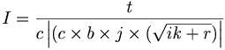

De: La Frikipedia, la enciclopedia extremadamente seria.
De: La Frikipedia, la enciclopedia extremadamente seria. De: La Frikipedia, la enciclopedia extremadamente seria.
Según algunos, las uribestias son el producto de la privatización de la televisión en Colombia (y el nacimiento de RCN y Paracol), sin embargo, parece que esta actitud de "bestias" responde a una compleja enfermedad lanzada hace años por los norteños (entiendase por Americanos (entiendase norteamericanos (entiendase estadounidenses))). En cuanto a la primera parte del concepto, diré, la palabra, viene de Uribio, o el futuro emperador Álvaro Uribe (de la gran chibchombia, se hace relación al mismo pues en la calle dicen, sobre todo por allá en Envigado (Donde Uribe cuenta con una afamada oficina), que quiere recuperar los tiempos dónde en Chibchombia se podía disfrutar de la renta sin trabajar, trabajar y trabajar.
La Uribestia se caracteriza por llevar siempre un trapo sucio al hombro (llamado poncho), un sombrero paisa (Entiendase por paisa traqueto, narco, paramilitar, aguila negra o ñero) y un baston de mando, dicen que sus poderes emanan de la nieve que cae de Chibchombia hacia EEUU, pero expertos aseguran que han caminado tierras y mas tierras de ellos sin que se encuentre quién de razón de su riqueza. Tambien hay otros que son llamados los verdaderos uribestias que además aseguran que los primeros son uribistas.
Los verdaderos Uribestias se reconocen por andar sin un centavo y estár contentos porque ahora si pueden visitar Nalgar (provincia cercana a Bogotá donde pasean las clases media baja a extra pobre el fin de semana o en puente, o cuando estén borrachos) y pasar por debajo de la Nariz del diablo (montaña que está en la trocha a Nalgar) que no se parece en nada a su representante en la tierra Bush u otros emperadores post-modernos. Los Uribestias se identifican porque al encenderles un televisor en frente buscarán inmediatamente RCN o Paracol, también se ha encontrado que se está transmitiendo un discurso uribestial pueden resistir la tentación de cambiar el canal.
Las Uribestias como su nombre lo indica, son Bestias, por lo tanto se pueden adquirir en el mercado negro o formal para desarrollar diferentes labores y también en caso de que los vigilantes de la fábrica estén haciendo muy bien su trabajo o el departamento de control interno funcione muy bien, en este caso los Uribestias suelen servir para entrenar a los guachimanes o los sapos de nuestro pequeño o grán negocio. Hay que tener cuidado con la adquisición de Uribestias muy sanas pues los resultados resultan impredecibles.
| Caracteristica | Valor | Notas |
|---|---|---|
| capacidad de carga | 10kg de Perico, Cocaina o Harihuana Seca | La capacidad de carga varia negativamente dependiendo de si la novia es prepago o postpago y si recientemente han pasado por el parque lleras en medellin. La capacidad se incrementa con el tiempo pero disminuye el monto de la entrega. |
| Conbustible o Alimento | 1 arepa, 1 taza de chocolate, 2 platos de calentao, 2 cajas de aguardiente antioqueño si se trata de un calentano. 1 pan, una taza de café, 1 plato de changua y una caja de ron santafé o kumis algarra si se trata de un montañero |
Para todos los casos se requiere un Televisor en las horas de alimentarlo, de otra manera no engulle bien y suele atorarse generando complicaciones para el empresario o explotado. |
| MTBF (Media Time beetwen fail) ó Tiempo medio antes de puñalada trapera por la espalda | 15 días o más si no hay elecciones o escandalos en el paracongreso menos de 20 segundos si se acaba de transmitir una alocución uribestial o están presentando padres e hijos o a jota mario valencia. |
En todos los casos, el difundir algún ruido terrorista (sinonímo de oposición, guerrillero, independiente, estudiante, educador, sindicalista, consciente, razonable, otro Dios, participativo) puede generar una reacción que le lleve a potencializar las glándulas sudoriparas y el estado de animo, con lo cual se se hace mantenimiento al sistema, y no resulta nocivo para su buen funcionamiento. |
Los neófijos en el tema argullen que el avance en la comprensión de la Uribestia es notable principalmente desde la caída de la calidad de la educación en chibchombia en el 2002, año en que se presume se hizo el primer golpe de estado democrático en chibchombia (Expertos señalan que Uribio no invento que el agua mojaba). El avance está decrito por la formula de fuerza de la uribestia.

Donde:
I = Incidencia positiva de la Uribestia
t = Conocimiento real de la sociedad
c = conocimiento certificado con carton, diploma, acta o certificado de asistencia
b = Morracos producidos
j = Cantidad de cabalgatas (en caballo únicamente, no cuenta el festival de la flores)
i = Asistencía a conciertos de Juanes
k = Asistencia a conciertos de Shakira
r = autoestima
Algúnos expertos sobre todo del MIT (Medellin Institution technocrats) consideran que la formúla es innecesaria pues dado que el conocimiento certificado siempre es superior al conocimiento real en los Uribestias o por lo menos eso creen estos illuminati, la incidencia siempre irá hacia un valor inferior entre mayor sea su cargo o su cantidad de certificados.
| | |||||||||
|---|---|---|---|---|---|---|---|---|---|
|
Geografía
Personalidades
Furbo y furbolistas
Música
Política
Tipos de colombiano
Otros
|
Autor(es):